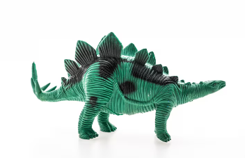
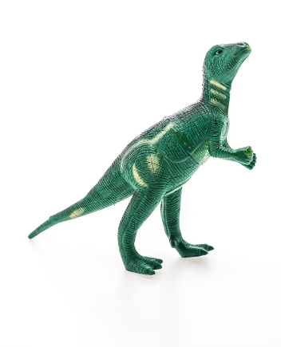
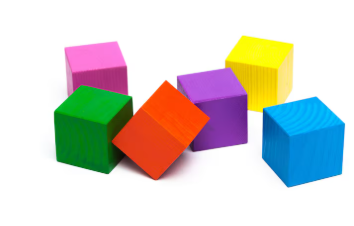
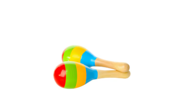

CATALOGO DE JUGUETES
Conejo de peluche + escalera mini
Valor: 19.990clp

Cantidad:
- 1
Un tierno conejo de peluche acompañado de una mini escalera de madera artesanal.
Este dúo está diseñado para fomentar el juego creativo, permitiendo que el personaje "escale"
estanterías o montañas de libros en las aventuras diarias de cualquier niño.
Estegosaurio de Juguete
Valor: 4.990clp

Cantidad:
- 6
Figura de plástico resistente en color verde vibrante con detalles en negro.
Destaca por su textura estriada, sus icónicas placas dorsales triangulares y una cola terminada en cuatro
púas defensivas. Es un juguete robusto y detallado, ideal para el juego imaginativo sobre la prehistoria.
Iguanodonte de Juguete
Valor: 4.990clp

Cantidad:
- 23
Figura de plástico rígido en color verde bosque con franjas amarillas.
Presenta una textura escamosa detallada y una postura erguida sobre sus patas traseras.
Es un juguete resistente y ligero, ideal para coleccionar o recrear escenas del mundo prehistórico.
Cubos de Madera Multicolores
Valor: 3.990clp

Cantidad:
- 12
Set de seis cubos de madera sólida con acabados en colores vibrantes
(rosa, amarillo, verde, naranja, morado y azul). Presentan una textura natural de veta visible y son ideales
para desarrollar la coordinación motriz y el reconocimiento de colores a través de la construcción.
Sonajeras de Madera
Valor: 3.990clp

Cantidad:
- 3
Par de sonajeras artesanales fabricadas en madera pulida con mangos de acabado natural.
Sus cabezales lucen alegres franjas de colores (rojo, verde, amarillo y azul), siendo un juguete rítmico perfecto
para la estimulación sonora y la coordinación motriz.
Tren de Bloques de Construcción
Valor: 4.990clp

Cantidad:
- 8
Un colorido tren de juguete ensamblado con piezas de plástico tipo bloque.
Presenta un diseño vibrante con ruedas funcionales de color rojo y una estructura modular que incluye chimenea y cabina.
Es ideal para estimular la creatividad y las habilidades motoras finas en niños pequeños.